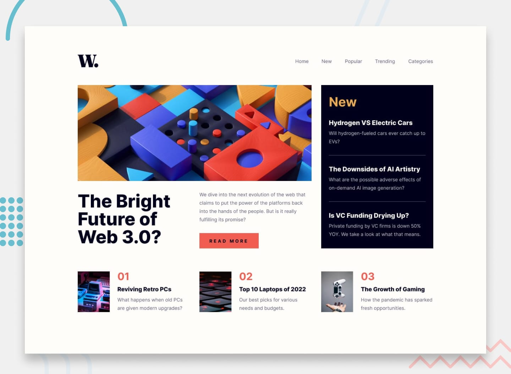
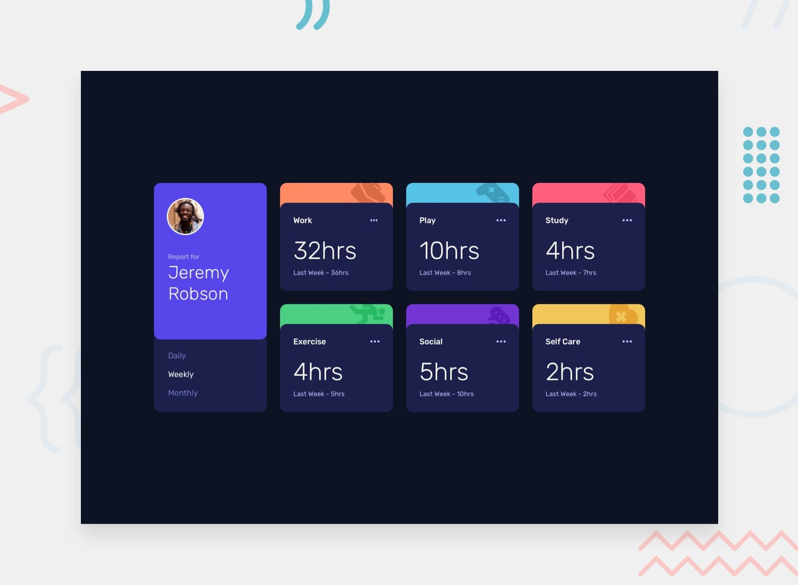

HTML5
Structure sémantique, accessibilité
Structure sémantique, accessibilité
Flexbox, Grid, responsive, animations
DOM, ES6+, Fetch API, modules
Versioning, branches, collaboration
Tailwind CSS, React (bases)
Exercices du site Frontend Mentor, couvrant HTML5, CSS3, JavaScript et React. Plusieurs niveaux de difficulté pour progresser continuellement.

Simple projet de mise en page d'un QR code.

Série de questions/réponses sous forme d'accordéon.

Mise en pratique de la disposition en grille (CSS Grid).

Simulation de boutique avec ajout au panier et manipulation du DOM.

Page d'accueil tech utilisant CSS Grid pour des layouts complexes.

Tableau de bord pour visualiser le temps passé sur diverses activités.
Flexbox permet de contrôler facilement l'alignement, la direction et l'ordre des éléments pour créer des layouts adaptatifs.
Lire la suiteCSS Grid offre un contrôle total sur les lignes et colonnes pour réaliser des mises en page complexes.
Lire la suite